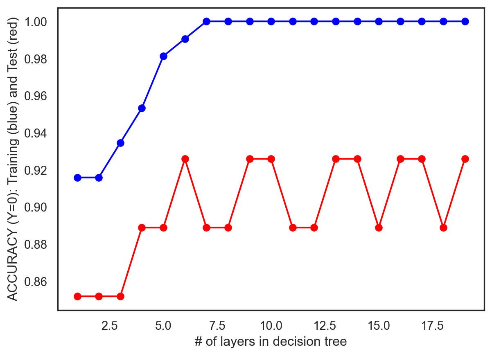
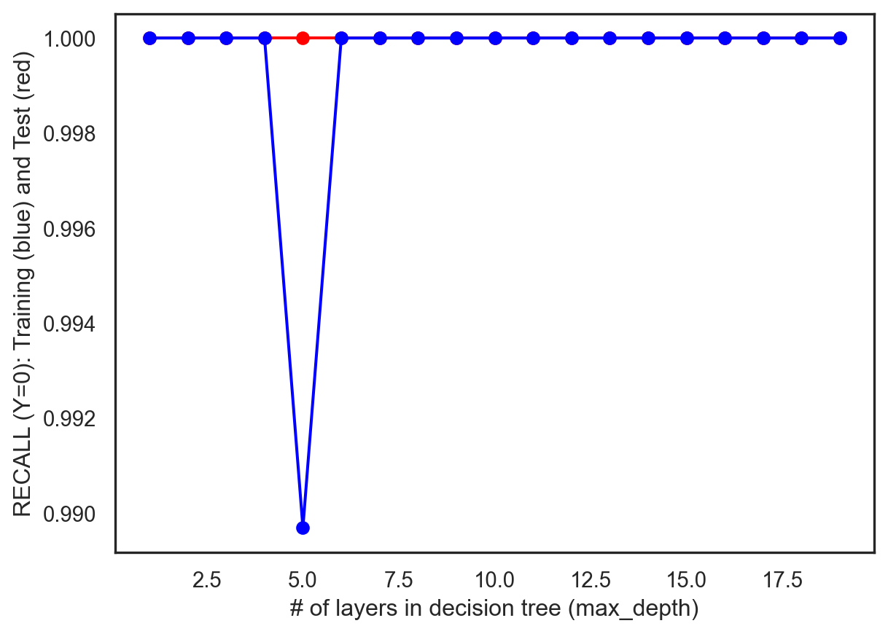
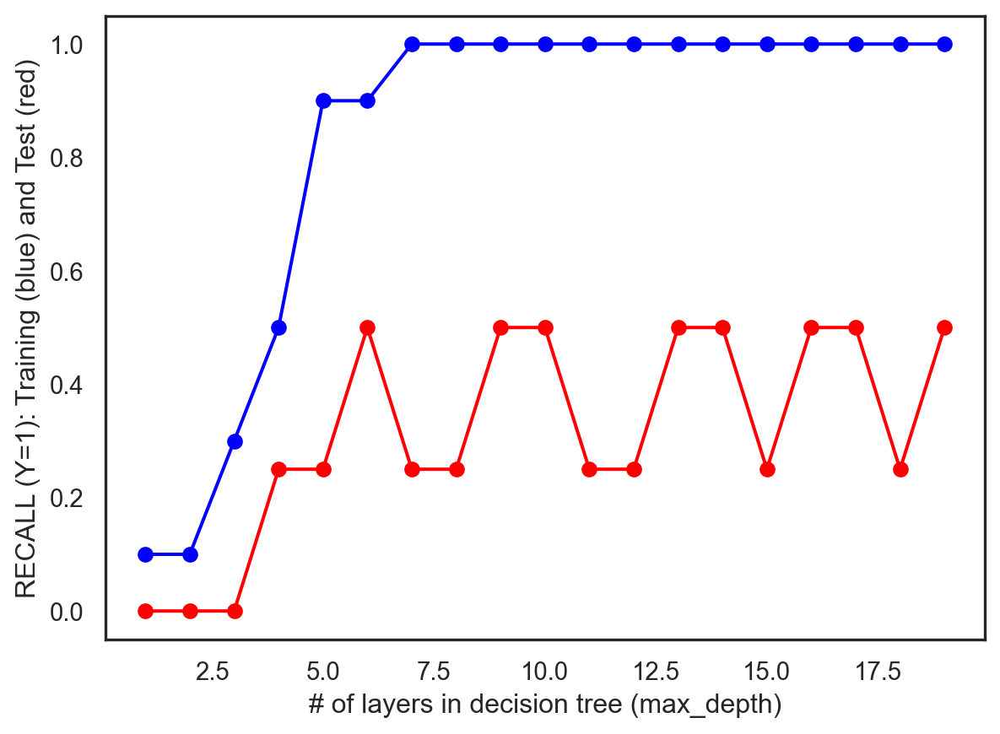

A decision tree is a flowchart-like tree structure where an internal node represents feature(or attribute), the branch represents a decision rule, and each leaf node represents the outcome. The topmost node in a decision tree is known as the root node. It learns to partition on the basis of the attribute value. It partitions the tree in recursively manner call recursive partitioning. This flowchart-like structure helps you in decision making. It’s visualization like a flowchart diagram which easily mimics the human level thinking. That is why decision trees are easy to understand and interpret.
Methods
Before we begin modeling our Decision Tree Classifier, we shall test the record data on a random classifier, which is a baseline model, and output its accuracy, precision, and recall values. We shall use sklearn’s train-test split function to divide the data into an 80-20 train-test split respectively. Next, we shall employ the Decision Tree Classifier and compare its initial and hyperparameter turned performance with each other and with the random classifier.
Load Libraries and Cleaned Data
Code
import pandas as pdfrom sklearn.tree import DecisionTreeClassifier # Import Decision Tree Classifierfrom sklearn.model_selection import train_test_split # Import train_test_split functionfrom sklearn import metrics #Import scikit-learn metrics module for accuracy calculationimport seaborn as sns import matplotlib.pyplot as pltfrom sklearn import treefrom IPython.display import Imageimport numpy as npfrom sklearn.metrics import accuracy_scorefrom sklearn.metrics import precision_scorefrom sklearn.metrics import recall_scorefrom sklearn.model_selection import train_test_splitfrom sklearn.metrics import confusion_matrixfrom numpy import transposeimport os
Explore the Pre-Processed Data using Correlation Heatmaps and Pairplots
In our data, our dependent variable is recession. Recession contains two labels: 0 or 1. In the variable recession, a 0 represents a time period in which a recession is not present, while a 1 represents a time period during which a recession is present, thereby making it a binary variable. In terms of our independent variables, we have a few, including, the GDP value, the unemployment percentage at the particular time, and the federal funds value, or the interest rate charged by the Federal Reserves for overnight lending to other banks.
Code
corr = econ_df.corr()print(corr.shape)sns.set_theme(style="white")f, ax = plt.subplots(figsize=(20, 20)) # Set up the matplotlib figurecmap = sns.diverging_palette(230, 20, as_cmap=True) # Generate a custom diverging colormap# Draw the heatmap with the mask and correct aspect ratiosns.heatmap(corr, cmap=cmap, vmin=-1, vmax=1, center=0, square=True, linewidths=.5, cbar_kws={"shrink": .5})plt.show();
The initial Decision Tree outputted a 100% on all metrics on the training data and an 89% accuracy on the test data. This is a case of major overfitting on the training data, as the the Decision Tree outputs a highly complex tree of several child nodes to learn the training data as best as possible. However, this led to it not generalizing well on unseen data, which is why we see a significantly lower accuracy on the test set. Therefore, we shall employ hyperparameter tuning for the Decision Tree to generalize better on unseen data and further improve upon our model
The “max_depth” hyper-parameter lets us control the number of layers in our tree. The leaf nodes of the Decision Tree do not split the data any further. Therefore, the “min_samples_leaf” hyper-parameter lets us control the classification for examples that end up in that node. We shall iterate over “max_depth” and “min_samples_leaf” as well as change the criterions, including gini and entropy, of judging the best splits to try to find the set of hyper-parameters with the lowest training AND test error.
Code
test_results=[]train_results=[]for num_layer inrange(1,20): model = tree.DecisionTreeClassifier(max_depth=num_layer) model = model.fit(x_train, y_train) yp_train=model.predict(x_train) yp_test=model.predict(x_test) test_results.append([num_layer,accuracy_score(y_test, yp_test),recall_score(y_test, yp_test,pos_label=0),recall_score(y_test, yp_test,pos_label=1)]) train_results.append([num_layer,accuracy_score(y_train, yp_train),recall_score(y_train, yp_train,pos_label=0),recall_score(y_train, yp_train,pos_label=1)])
Code
plt.plot([x[0] for x in test_results],[x[1] for x in test_results],label='test', color='red', marker='o')plt.plot([x[0] for x in train_results],[x[1] for x in train_results],label='train', color='blue', marker='o')plt.xlabel('# of layers in decision tree')plt.ylabel('ACCURACY (Y=0): Training (blue) and Test (red)')plt.show()plt.plot([x[0] for x in test_results],[x[2] for x in test_results],label='test', color='red', marker='o')plt.plot([x[0] for x in train_results],[x[2] for x in train_results],label='train', color='blue', marker='o')plt.xlabel('# of layers in decision tree (max_depth)')plt.ylabel('RECALL (Y=0): Training (blue) and Test (red)')plt.show()plt.plot([x[0] for x in test_results],[x[3] for x in test_results],label='test', color='red', marker='o')plt.plot([x[0] for x in train_results],[x[3] for x in train_results],label='train', color='blue', marker='o')plt.xlabel('# of layers in decision tree (max_depth)')plt.ylabel('RECALL (Y=1): Training (blue) and Test (red)')plt.show()



Train Optimal Model
Code
from sklearn import treemodel = tree.DecisionTreeClassifier(max_depth=7)model = model.fit(x_train, y_train)yp_train=model.predict(x_train)yp_test=model.predict(x_test)
Thus, we see that the hyper-parameter tuned decision tree outputs significantly better results. Our initial decision tree yielded an accuracy of only 89%, but after hyper-parameter tuning our model, our accuracy value increased to 93%, which is an impressive difference. The optimal values of the parameter are max_depth = 6 and min_samples_leaf = 11. The longer the tree is, the more it tends to overfit the data, and thus, we see that after hyper-parameter tuning, the extra nodes are removed so that we could get ourselves a higher accuracy for the test data.